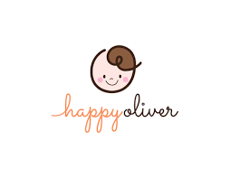

<div class="demo-container" [class.demo-is-mobile]="mediaQuery.matches">
  <mat-toolbar color="primary" class="demo-toolbar">

    <div class="demo-sidenav-content" mat-icon-button>
      <button class="btn" (click)="snav.toggle();">
        <i class="fa fa-bars"></i></button>
    </div>

    <div id="wrapperHeader">
      <div id="header">
        
      </div>
    </div>

  </mat-toolbar>

  <mat-sidenav-container class="demo-sidenav-container" [style.marginTop.px]="mediaQuery.matches ? 56 : 0">
    <mat-sidenav #snav [mode]="mediaQuery.matches ? 'over' : 'side'" [fixedInViewport]="mediaQuery.matches"
      fixedTopGap="56">
      <mat-nav-list>
        <a mat-list-item routerLink="." *ngFor="let nav of fillerNav">
          <span (click)="toggle(nav)">{{nav.label}}</span></a>
      </mat-nav-list>
    </mat-sidenav>
    <mat-sidenav-content>
      <app-tab-content [selected]="selected"></app-tab-content>
    </mat-sidenav-content>
  </mat-sidenav-container>
</div>